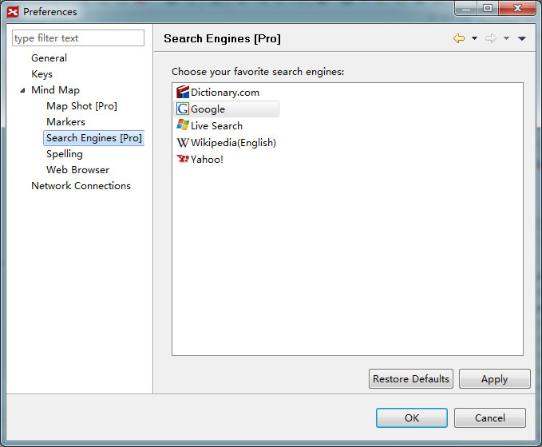

You can search online for text and images, and import them into XMind. Here's how:
To search for text online:
- Select one or more topic(s).
- Choose "Tools > Search" on the menu.
- You will see a search engine interface in a Web Browser view.
- After conducting your search, selecting any texts and/or URLs that you'd like to use, and drag them into the map.


To search image online:
- Select topic.
- Click image icon on the toolbar, and choose "From Web" in the drop-down list menu.

- Select the image(s) from Web Browser view, and drag and drop into the map.
- The image can be dropped into existing topic, or into a blank spot on the map as a floating topic.

Note:
- Topic Content is used as keywords for searching text and image.
- You can change your preferred search engine by:
- Choose "Edit > Preferences"
- Select "Search Engines"
- Choose your preferred search engines.
